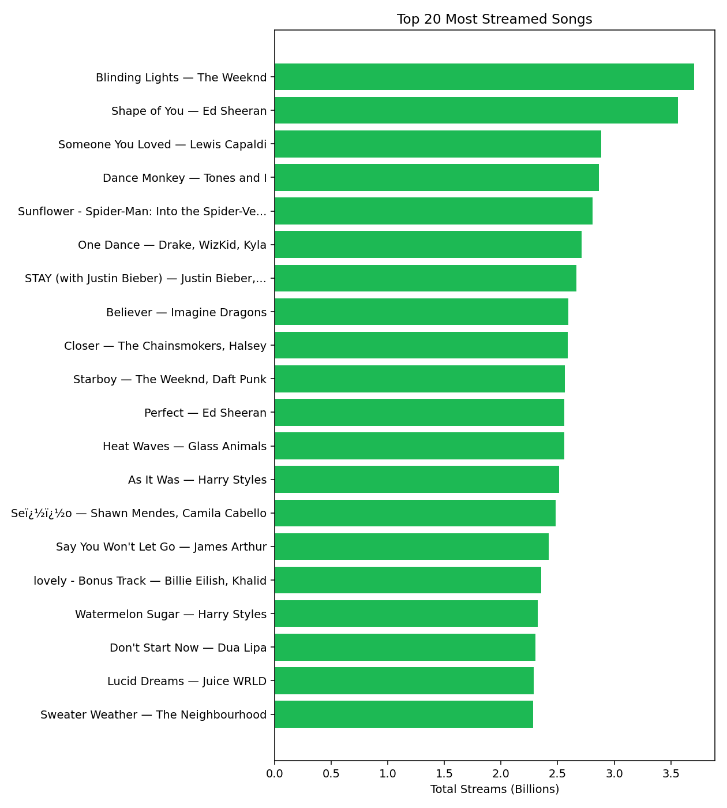
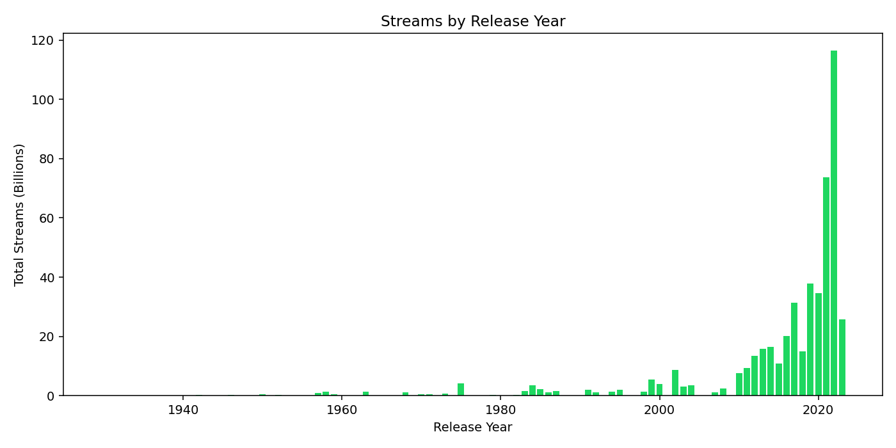
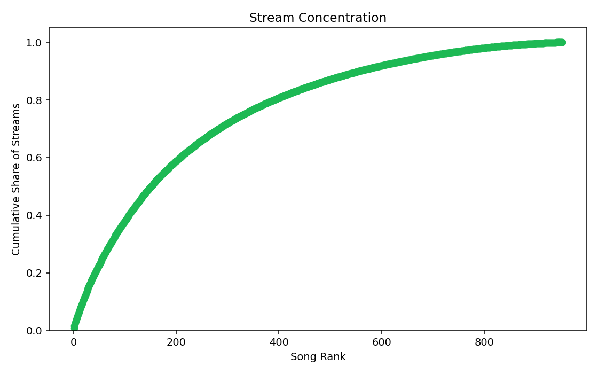
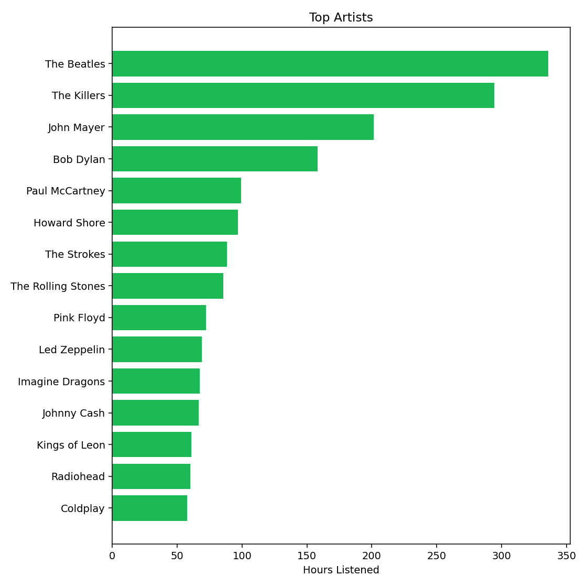
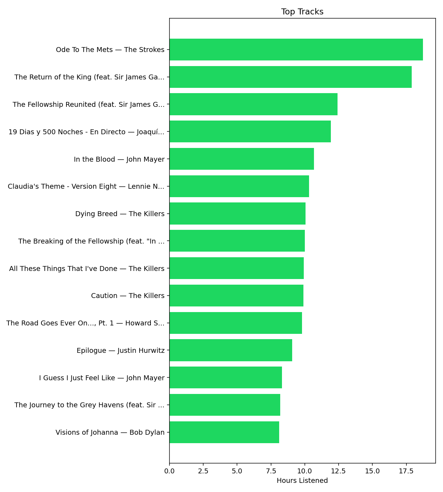
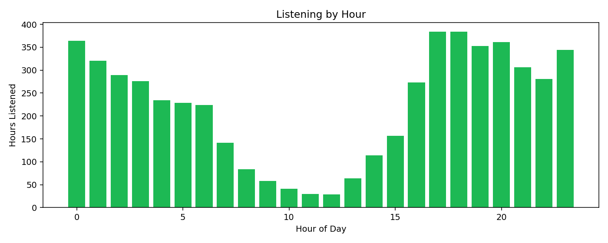
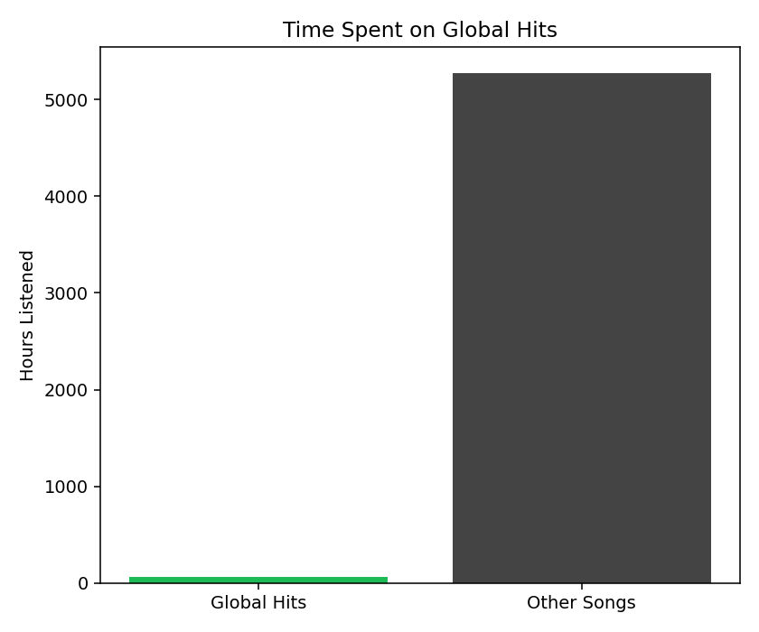
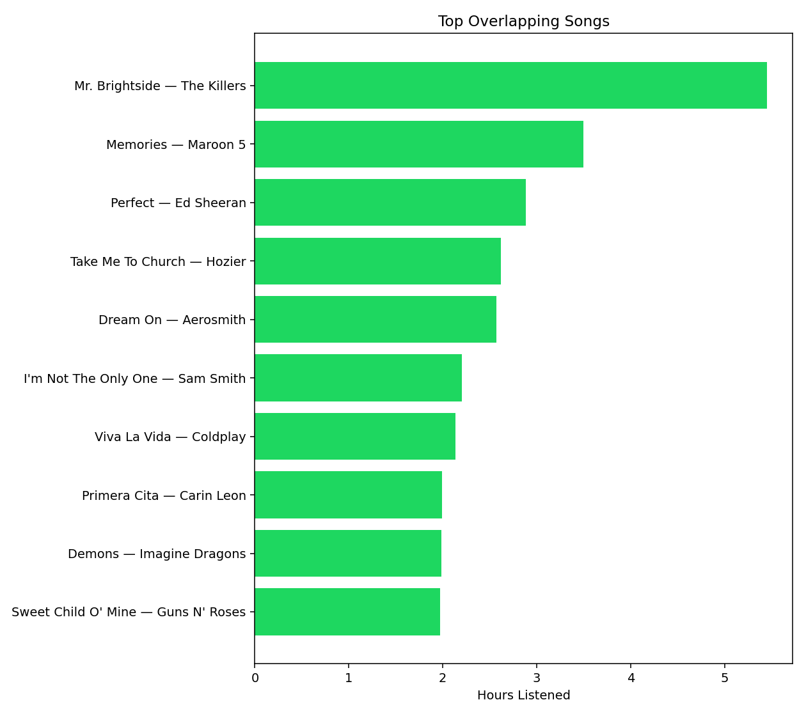

How To Use
- Place
moststreamedsongs.csvandspotify_history.csvin this folder (use the bundled ones or your own exports). - Run
python visuals.pyto clean the data and generate fresh PNG charts inimg/. - Open or refresh this page to see the PNGs. No uploads or browser scripting needed.
If a chart looks empty, check that your files have track name, artist name, streams (global), and msPlayed/endTime (history).
Data & Setup
The visuals below are static PNGs generated by visuals.py.
Replace the CSVs, run python visuals.py, then refresh this page.
Datasets used: global most-streamed songs (audio features and stream counts) and a Spotify streaming history export (your played tracks with timestamps and time played).
Sample CSVs: Global hits from Kaggle (link) and a streaming history sample from Maven Analytics (link).
Using your own Spotify data: request your “Extended” streaming history (all-time) at Spotify privacy download. After you get the email, download the ZIP, find the history CSV, rename it to spotify_history.csv, place it in this folder (and your global file as moststreamedsongs.csv if you have a different one), run python visuals.py, then refresh this page.
About the Data
We use two datasets: a Kaggle file of the most streamed songs on Spotify with audio features, and a Spotify Streaming History export from one listener with timestamps and time listened.
- Global: moststreamedsongs.csv (Kaggle)
- User: spotify_history.csv (exported streaming history)
Global Insights
Top 20 Most Streamed Songs
Interpretations:
- Organizes an easy-to-follow list of the most streamed songs on Spotify.
- Lets you compare each song’s popularity against the others.
- Makes it easy to spot artists that show up frequently.
Total Streams by Release Year
Interpretations:
- Shows total streams for all songs grouped by their release year.
- Helps you see which years have the most hits.
- Gives a sense of which eras dominate the playlist.
Stream Concentration
Interpretations:
- Visualizes how song rank relates to its share of total streams.
- Most highly ranked songs often have similar stream counts.
- A steep curve means a few songs dominate; a flatter, more linear curve means streams are spread out.
User Insights
Top Artists
Interpretations:
- Lists your top artists by total hours listened.
- Shows how your listening time is split across artists.
- Helps generalize your taste based on your most-played artists.
Top Tracks
Interpretations:
- Shows your top songs and the total hours you listened to each.
- Makes it easy to spot favorite tracks and clear outliers.
- Helps quantify how much variety you have in your music taste.
Listening by Hour
Interpretations:
- Timeline of how much you listen during each hour of the day.
- Shows when you play music the most and least.
- Helps you spot daily patterns that line up with your listening peaks.
Comparison
Time Spent on Global Hits
Interpretations:
- Compares your hours on songs in the global list versus everything else.
- Shows whether your taste leans mainstream or niche based on hours.
- Highlights how popular the music you listen to is overall.
Top Overlapping Songs
Interpretations:
- Lists the songs you play most that also appear in the global top list.
- Shows how your favorite songs line up with broader popularity.
- Helps you spot favorites that lots of others associate with too.